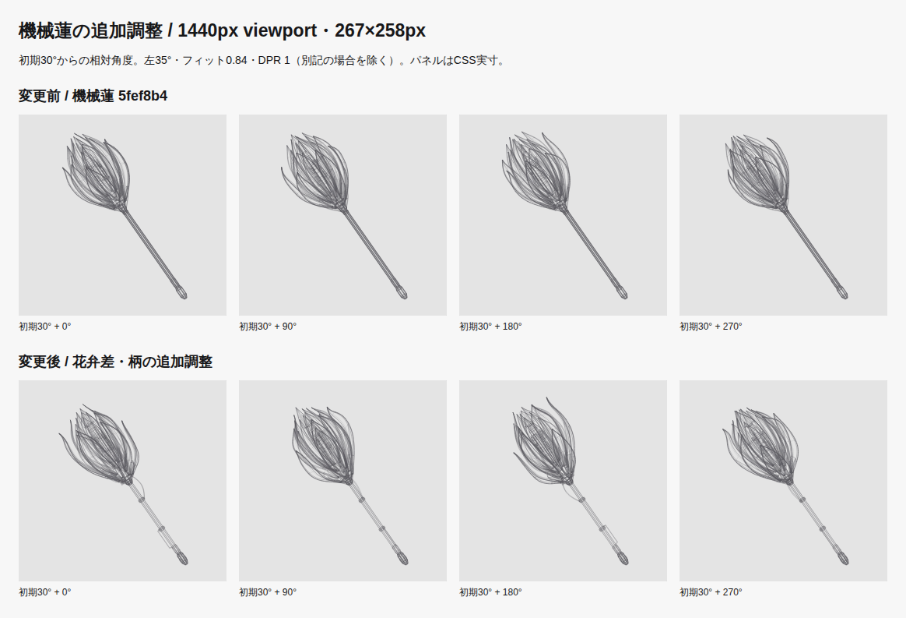
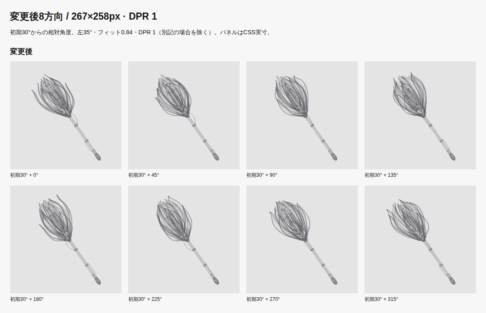

変更前は
5fef8b4bab482f372cce5a5864e1bfa4a0397499
の3層19枚の機械蓮。今回の実装は
f483a2b3ceec20bce991e67f64fc8efc582ba0b1。旧曲線杖や旧mainとの比較ではありません。
19枚を維持し、外層を長く反る2枚・短く開く2枚・閉じ気味2枚へ変更。各花弁の取付高さ、方位、反りと膨らみ位置、厚みを個別指定しました。中・内層を前後にずらし、内冠の隙間から9本の花芯ピンが覗く構成です。3組の支持リング片、主花弁の直線補強、萼の両側支持を追加しています。
ユーザーが選んだ上部の湾曲ケーブルと下部の短い副軸を採用。クランプ、間隔の異なる節、石突きの段差を加え、上部の密度・中腹の静けさ・下端の小さなまとまりを作りました。全て取付点で本体に接続しています。
| 項目 | 変更前 → 変更後 |
|---|---|
| 全長 | 10 → 10 |
| 頭部長 | 4.218 → 4.5 |
| 全周最大径 | 3.123 → 3.383 |
| 柄の連続する静かな区間 | 4.02 → 1.71 |
| 線分 | 6153 → 6464 |
| 共有頂点 | 5378 → 5562 |
| 267×258px 固定縮尺（CSS px / モデル単位） | 26.628 → 25.461 |
| 初期角度の軸に直交する花冠幅（CSS px） | 76.98 → 79.537 |
フィット係数0.84・初期30°・左35°・線幅1.1/0.8/0.5 CSS pxと各階層の不透明度は維持。柄をcomponent、花芯をdetailへ割り当てました。固定縮尺は形状ごとに全周境界から算出するため値が異なり、変更後は少し小さい縮尺です。頭部の占有感は部品の形と張り出しで増やしています。

狭いPC 223×258px / 390px viewport・348×238px。すべて初期30°から相対0/90/180/270°。
同倍率の造形比較 / 狭いPCの同倍率比較 / 共通縮尺と原点。両モデルの全周境界の和集合から同じ縮尺・原点を算出した資料で、通常設定の比較と区別しています。

狭いPC 8方向 / 標準PC DPR 2 / 狭いPC DPR 2
主要構造／全線 標準PC / 主要構造／全線 狭いPC / 主要構造／全線 モバイル / 花冠3倍拡大
主要構造は全19枚の表裏輪郭・稜線・支持・柄・外部ケーブルを含み、内部機器・ピン・フィン・細いリブなどを全線で追加。開発用資料で、本番に表示切替はありません。前後×3枠×2 DPR×8方向の96条件を実preview Canvasと照合しています（PNG一致記録）。
| viewport | 実描画領域 | Home比較 |
|---|---|---|
| 1440 | 267×258 | 変更前 / 変更後 DPR 1 / 変更後 DPR 2 |
| 1024 | 223×258 | 変更前 / 変更後 DPR 1 / 変更後 DPR 2 |
| 980 | 914×238 | 変更前 / 変更後 DPR 1 / 変更後 DPR 2 |
| 768 | 726×238 | 変更前 / 変更後 DPR 1 / 変更後 DPR 2 |
| 390 | 348×238 | 変更前 / 変更後 DPR 1 / 変更後 DPR 2 |
| 320 | 278×238 | 変更前 / 変更後 DPR 1 / 変更後 DPR 2 |
前後12条件のパネル座標・寸法は一致。Homeの配置、導入高、ヘッダー、フッター、他ページ、サムネイル、検索、描画ライフサイクルは変更していません。
6.18.54.1-microsoft-standard-WSL2 / AMD Ryzen 5 3600 6-Core Processor / Chromium 156.0.8078.4 / Node v26.12.1。各条件60実描画のウォームアップ後に480実描画を採取。clearRectから最後のstrokeまでの投影＋線描画CPU時間で、計測処理を含み、描画を省略したrAFとGPU合成は含みません。
| 実描画枠 / DPR | 中央値 前→後 ms | p95 前→後 ms |
|---|---|---|
| 267×258 / 1 | 1.85 → 1.9 | 2.9 → 2.5 |
| 348×238 / 2 | 1.8 → 2 | 2.6 → 2.6 |
この環境ではp95 8msの目安以内。全端末の保証ではありません。
| 配信量 | 変更前 B | 変更後 B |
|---|---|---|
| Home HTML raw | 1,115,216 | 1,173,999 |
| Home HTML gzip | 100,997 | 105,573 |
| 静止SVG raw | 1,104,982 | 1,163,765 |
| 静止SVG gzip | 96,443 | 100,979 |
線分と配信量の増加は、花芯ピン、支持片・補強、ケーブル・副軸・節・終端の追加によるものです。花弁枚数・曲線分割数を増やして本数を合わせる変更はありません。形状は初期化時に生成し、共有頂点と重複辺除去を維持しています。
npm run check：97 files; 0 errors, warnings, hintsnpm run lint：passednpm run test -- --run：53 files; 330 tests passednpm run build：Astro and Pagefind passedPLAYWRIGHT_EXTERNAL_WEB_SERVER=1 npm run test:visual --
--workers=2：90 tests passed; Chromium desktop and mobile; built preview at
http://127.0.0.1:4324/portfolio/
Prettier --check changed TypeScript; git diff --check：passed
10寸法×360角度で最小余白 18.952 CSS px。軸誤差 1.1368683772161603e-13 度。128分割参照に対する最大曲線誤差 0.053 CSS px。有限性、alpha、固定縮尺・中心、接続、重複辺、Canvas/SVG共通経路を検証しました。
クリック／タップ／Enter／Space、停止後のフォーカス移動、Astro往復、省動作設定変更、画面外・非表示時の停止、停止中rAFなし、JS無効／Canvas取得失敗、検索併用、Bento／archive／レイアウト／サムネイルの既存回帰を維持しています。
寸法・全周・曲線・ソースとビルドのSHA256 / 対象コミット・変更ファイル・TDD・実行コマンド / 資料の整合性検証
Firefox／Safari・実機タッチ・実OSのタブ切替・Windowsでのテスト起動は未検証。タッチはChromiumエミュレーション、非表示通知は合成イベントと単体テストで確認しています。マージ・公開は行っていません。